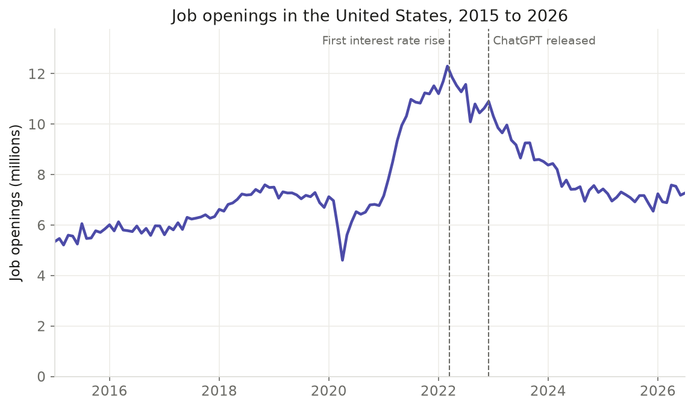

Introduction
Overview
On September 4, 2026, software development job postings on Indeed stood about 24 percent below their level in February 2020 (Indeed, via FRED). In early 2022, the same postings had been more than twice as high as in February 2020 (Indeed, via FRED). That rise and fall raises a simple question: what slowed tech hiring down? Three explanations compete: higher interest rates, new AI tools that can do some of the work, and a reset after tech companies hired too many people during the pandemic. Signs of all three appeared in 2022. In March 2022, the Federal Reserve began raising interest rates from near zero (Federal Reserve). By July 2023, its main rate had reached 5.25 to 5.5 percent (Federal Reserve). In late November 2022, OpenAI released ChatGPT (TIME). About two months later, it had 100 million users a month, a pace faster than TikTok or Instagram (TIME). In the same month as ChatGPT’s release, Meta let go of more than 11,000 employees (Meta). The slowdown also reached the wider economy. Job openings across the United States peaked at about 12.3 million in March 2022 (U.S. Bureau of Labor Statistics). By July 2026, that number had fallen to 7.3 million (U.S. Bureau of Labor Statistics).

The answer matters because each explanation points to a different future. If higher interest rates caused the slowdown, hiring could pick up again as borrowing gets cheaper. If AI tools now do work that people used to do, some of those jobs may not return. If companies simply hired too many people during the pandemic, the drop may be a one-time reset. Meta’s cut in November 2022 came to about 13 percent of its staff (Meta). Its chief executive, Mark Zuckerberg, wrote that online shopping had returned to its earlier trends after the pandemic (Meta). More than 191,000 workers at U.S. tech companies lost their jobs in 2023 alone (Crunchbase News). People at the start of their careers may face the hardest path. In early 2026, only 4.5 percent of software development job postings on Indeed were for entry-level roles, while 69.3 percent were for senior roles (Indeed Hiring Lab). Between November 2022 and June 2026, employment of workers aged 22 to 25 fell about 11 percent in the jobs most open to AI (Stanford update, August 2026). Over the same period, employment of workers the same age in jobs less open to AI grew about 10 percent (Stanford update, August 2026). That leaves young workers in the jobs most open to AI about 19 percent behind their peers (Stanford update, August 2026). Students choosing a subject, colleges planning courses and employers planning teams all need to know which explanation fits.
Researchers have already started to study this question. Their early findings point in different directions. In August 2025, Stanford researchers reported a 13 percent drop in employment for workers aged 22 to 25 in the jobs most open to AI (Stanford working paper, August 2025). They measured that drop against young workers in jobs less open to AI (Stanford working paper, August 2025). The figure also takes account of wider hiring changes at the same companies (Stanford working paper, August 2025). The 19 percent gap in the August 2026 update comes from a simpler comparison that leaves those company changes out (Stanford update, August 2026). The same update found no widespread job losses across the economy linked to AI (Stanford update, August 2026). In October 2025, the Budget Lab at Yale reported that the wider job market showed no clear disruption in the 33 months after ChatGPT’s release (The Budget Lab at Yale). Indeed Hiring Lab found that software development postings grew by almost 15 percent after late February 2025, when a popular AI coding tool launched (Indeed Hiring Lab). Over the same period, all job postings fell by 7 percent (Indeed Hiring Lab). Between May 2025 and May 2026, senior roles made up 71 percent of the growth in software development postings (Indeed Hiring Lab). Most of this work looks at the whole economy or at broad groups of jobs. Less is known about the AI companies themselves and the jobs they post. Interest rates and AI changed in the same year, so their effects are hard to tell apart. There is still room to compare the timing of each change, follow the job postings of individual companies, and check online postings against government counts. The research questions below follow from these open gaps.
Research Questions
- How much did tech job postings rise and fall between 2019 and 2026, and how does that compare with other kinds of jobs?
- Did tech job postings start to fall before or after ChatGPT was released in late November 2022?
- How closely does the fall in tech job postings line up with the interest rate rises that began in March 2022?
- Do government counts of job openings, hires and quits tell the same story as online job postings?
- Has the number of people working in software and data jobs kept growing, even as job postings fell?
- What kinds of roles do AI companies post most often, and how many of them are customer-facing technical roles?
- How many openings at AI companies are for entry-level workers compared with senior workers?
- How much pay do AI companies advertise for different kinds of roles?
- How has the share of remote, hybrid and in-office jobs changed from 2019 to 2026?
- Which cities appear most often in tech job postings, and how does remote work compare with them?